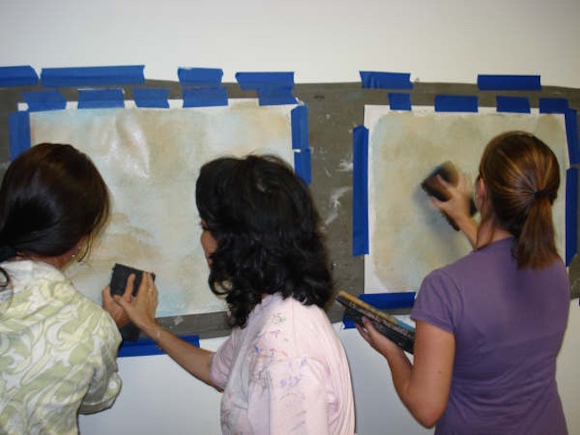
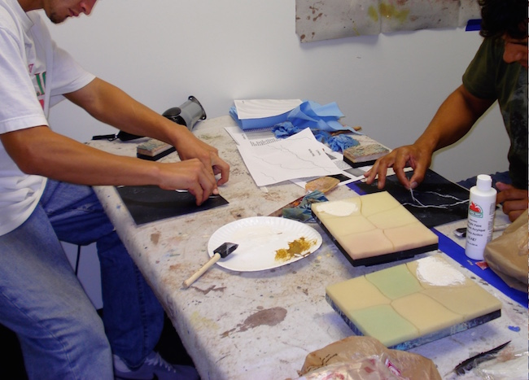
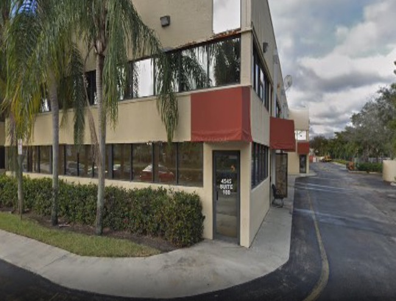
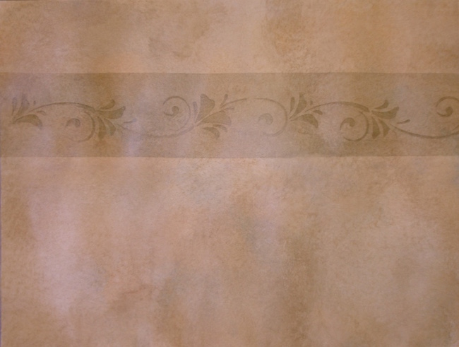
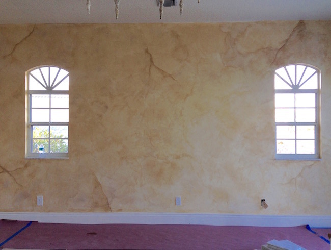
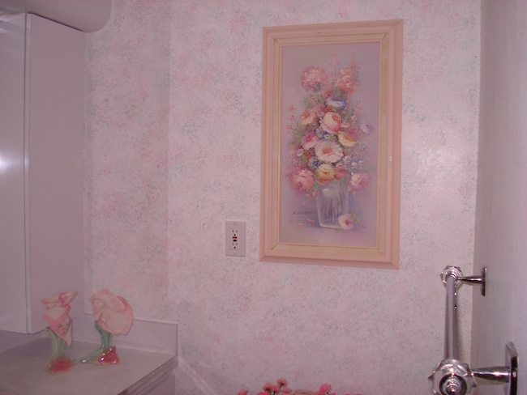
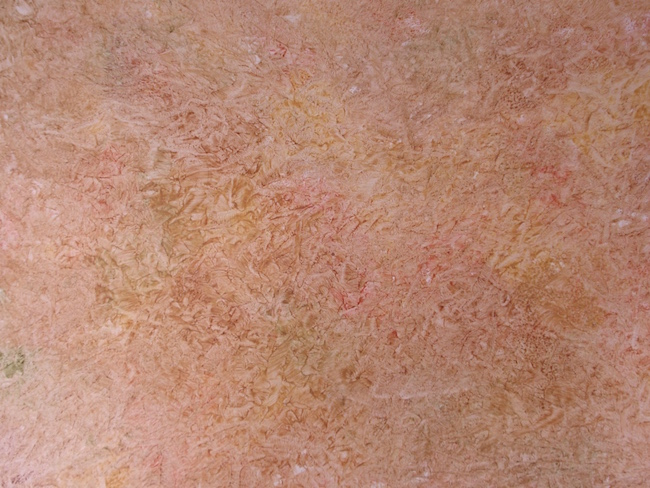
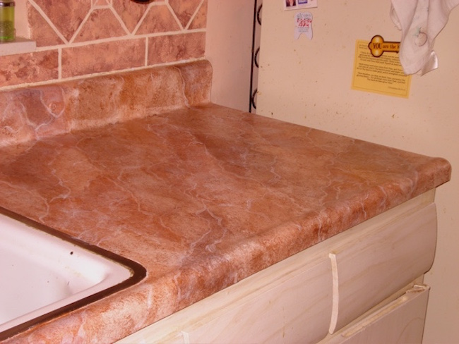
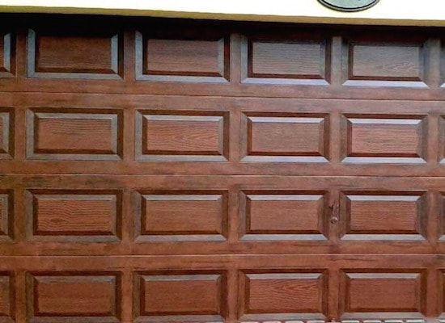

Now you can learn the professional art of Faux Painting with the Triple S Faux Painting System (Patent #7472450)


Faux painting classes are adapted to your experience. Hands on instruction will enable you to perfect various faux finishing techniques quickly.
Our classes are limited to 3 students at one time so you get the attention you need. You can ask many questions and not feel like you are holding back other students. This is the perfect learning environment where you won't feel inadequate or intimidated.
Tenemos clases en Espanol tambien

The Bridge Church
4545 N. W. 103 Ave.
Sunrise, Florida 33351
* From I-75 take Sawgrass Expressway to Oakland Park Blvd.
* At Hiatus, go left.
* At 44 St., go right.
* At 103 Ave, go left. 2nd building on left.
We now offer HANDS ON coaching class at address of your choice. Certain locations do not qualify.
For more information, call 786-554-7710.
*MATERIALS NEEDED FOR THE CLASSES ARE COVERED WITH REGISTRATION FEE.
*Does not apply to ON SITE classes
Registration fee for each class (click on button below each description of class)
includes the Basic Kit and some materials needed for that class. Other materials needed will be
provided at no cost to students.
Once your registration deposit is received, you will be contacted by e-mail or phone. Please
register at least two weeks before the class date.
You must pay registration fee (non-refundable once class is scheduled) with credit
card or send *check to:
Murals and Faux Painting, Inc.
5451 N.W. 180 Terrace
Miami Gardens, FL 33055-3163
A fee of $25 is charged for any bounced check. Balance is due at the beginning of
the class. Can be paid with check, cash or credit card.
For now all classes available are close to Miami - Ft. Lauderdale area only.
Please feel free to call 786-554-7710 for any questions.


Cost $199 REGISTRATION FEE $42 (includes Basic kit)
Learn how to faux paint the 2 most requested faux finishes there are in multiple colors. Get
different ideas how to incorporate stripes for interest. You will even learn how stencil in multiple
colors at the same time. Practice how to properly do corners and tight spaces.
Cost $300 REGISTRATION FEE $42 (includes Basic kit)
HANDS ON coaching class. Choose Old World or Color Washing in any color. We come to your place and
teach you how to faux paint on your own walls. Save between $400- $700 and Faux It Yourself.

Cost $199 REGISTRATION FEE $42 (includes Basic kit)
Learn the easiest and fastest way to faux paint a brick wall. Get different ideas how to make them
look real or stylized. Discuss how to properly measure walls to tape off the grout lines.
Cost $350 REGISTRATION FEE $42 (includes Basic kit)
HANDS ON coaching class to learn how to tape and faux paint your walls like brick. We come to your
house and teach you how to paint your own walls. Save between $800 - $1200 and Faux It Yourself.


Cost $199 REGISTRATION FEE $52 (includes Basic kit and sea sponge)
Learn
the easiest and fastest way to faux paint with a rag or sponge. Discuss how to properly do corners
and edges. Ragging is still a popular, simple but elegant way to add a texture look to any wall.
Learn how to apply a faux finish using a rag or sponge with multiple colors at the same time.
Cost $300 REGISTRATION FEE $52 (includes Basic kit and sea sponge)
HANDS ON coaching class. Choose Sponging or Ragging in any color. We come to your place and teach
you how to faux paint on your own walls. Save between $400- $700 and Faux It Yourself.

Cost $199 REGISTRATION FEE $75 (includes Basic kit, feathers, Faux Marble DVD) Learn how to faux paint 3 types of marble, using a variety of tools to achieve these popular faux finishes. Discuss how to properly prepare surfaces such as counter tops.
Cost $300 REGISTRATION FEE $75 (includes Basic kit, feathers, Faux Marble
DVD)
HANDS ON coaching class to learn how to faux paint surfaces like marble. Choose between 7 types of
marble. We come to your house and teach you how to paint your own surfaces. Save between $500 -
$1000 and Faux It Yourself.

Cost $199 REGISTRATION FEE $85 (includes Basic kit, stencils, graining pad
and Faux Wood DVD)
Learn how to faux paint 3 types of wood, using a variety of tools to achieve
these popular faux wood finishes. Discuss how to properly prepare surfaces such as garage doors and
cabinets. Simulation of painting a front door with door knobs.
Cost $300 REGISTRATION FEE $85 (includes Basic kit, stencils, graining pad
and Faux Wood DVD)
HANDS ON coaching class to learn how to faux paint your garage doors like wood. Choose Mahogany or
Oak in 6 colors. We come to your house and teach you how to paint your own doors. Save $500 - $1500
and Faux It Yourself.
If you live too far away, don't despair. Purchase our Basic faux painting kit, and you can have your own personal workshop, and learn how to faux paint right at home! There are complete, step by step instructions for the most popular faux finishes on the market. Play back the lessons over and over again. With practice, you will attain the skills of a professional faux painter in no time.
Our BASIC KIT is now on sale for only $39.99 for a limited time. Visit our Faux Painting Store now and order your kit today.

Part of the Patented (#7472450) Triple S Faux Painting System.
For a limited time...Order your any of our Faux Painting Kits today and get a FREE Color Suggestion E-Book as a .pdf file that will be emailed to you. You can view it on your computer or download.

We'll send you a link via email for your FREE Color Suggestions and Idea E-book, too. This is the perfect tool for choosing your faux painting colors.
Take time to view the pictures that customers have sent to us and their testimonies.
Testimonies
and pics by faux painting customers